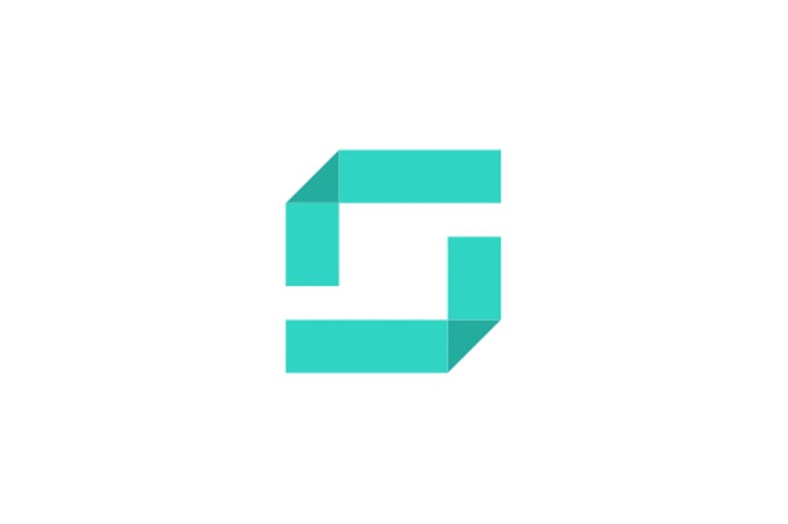
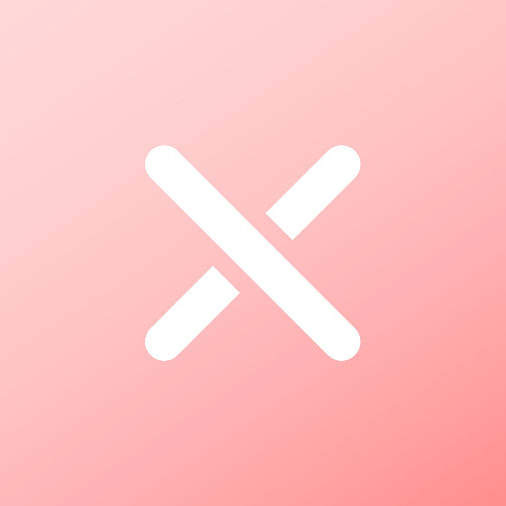
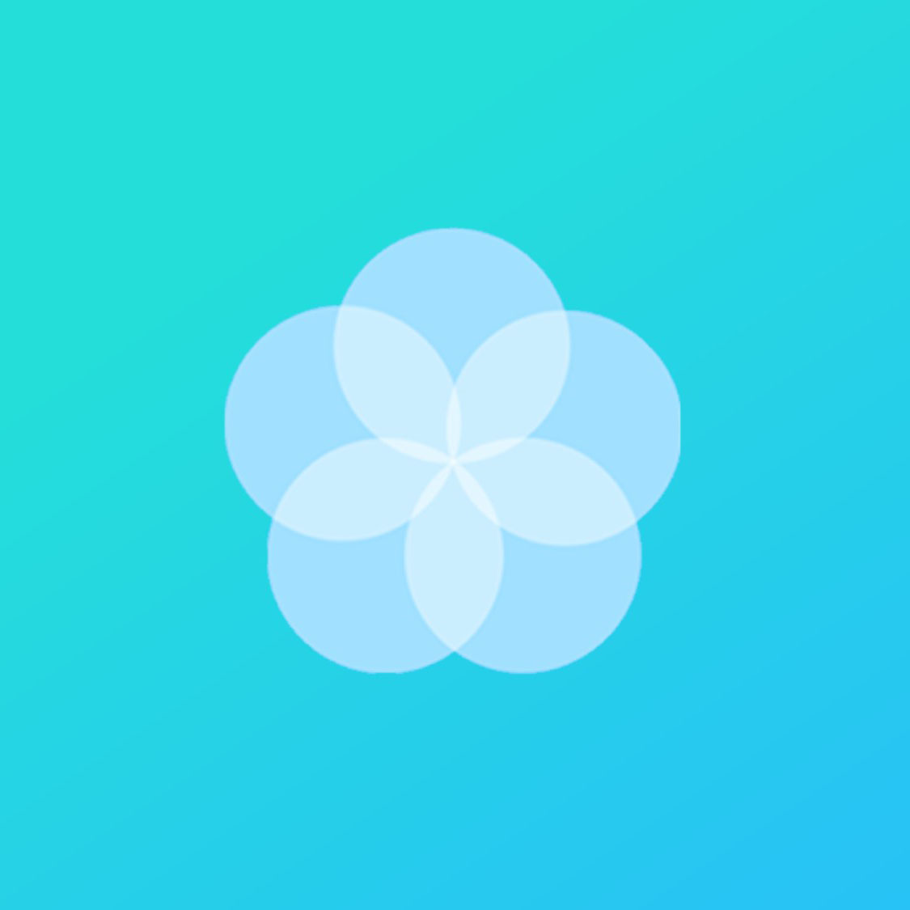

全部
Windows
Android
字体
Winkit
这是一个管理窗体的工具，可以获取和更改窗体的信息，如大小、位置、是否置顶等。
CLock
这是一个屏幕保护程序，仿 Win8+ 锁屏界面，在屏保上显示时间。

Sode
这是一个基于 ZXing 的二维码&条码工具，支持写码、读码和文码，支持多种码制。
Nullfile
这是一个生成损坏文件的工具，可以使用这个工具来生成指定大小的损坏文件（没啥用）。

Sext
这是一个别样的文本工具，可以将文本转换成小型大写字母、颠倒、气泡、上标、全角、点阵字等各种奇葩的字符。

Error
这是一个整人程序，你可以用它制造出电脑死机、键盘失灵、蓝屏、闪屏、黑屏等各种假象。

Color
这是一个取色器，提供取色、放大镜、色值转换、选取颜色等功能。(推荐使用新版：Picolor)
Random
这是一个随机小工具，支持随机数和随机字符串，可以自定义随机区间和小数位数以及自定义文本内容。